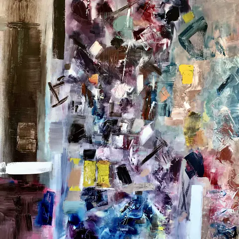
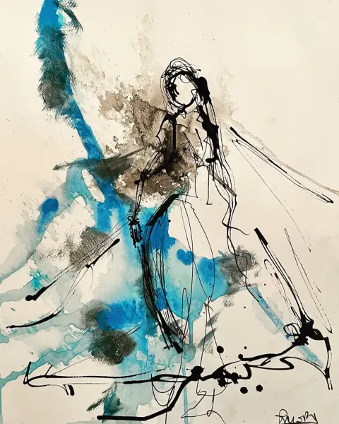
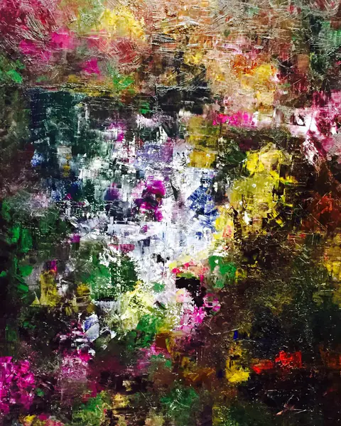

Approcher une toile.Laisser remonter un souvenir.



Ces images s’ouvrent directement en grand format. Activez JavaScript pour parcourir la collection complète, filtrer les œuvres et ouvrir la visionneuse. Les chapitres du journal restent accessibles.